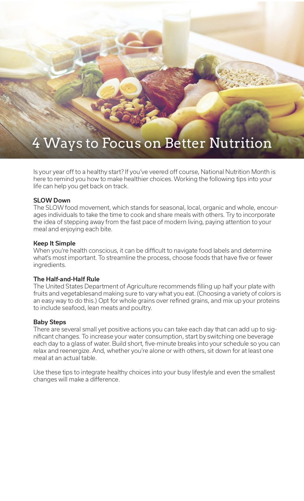
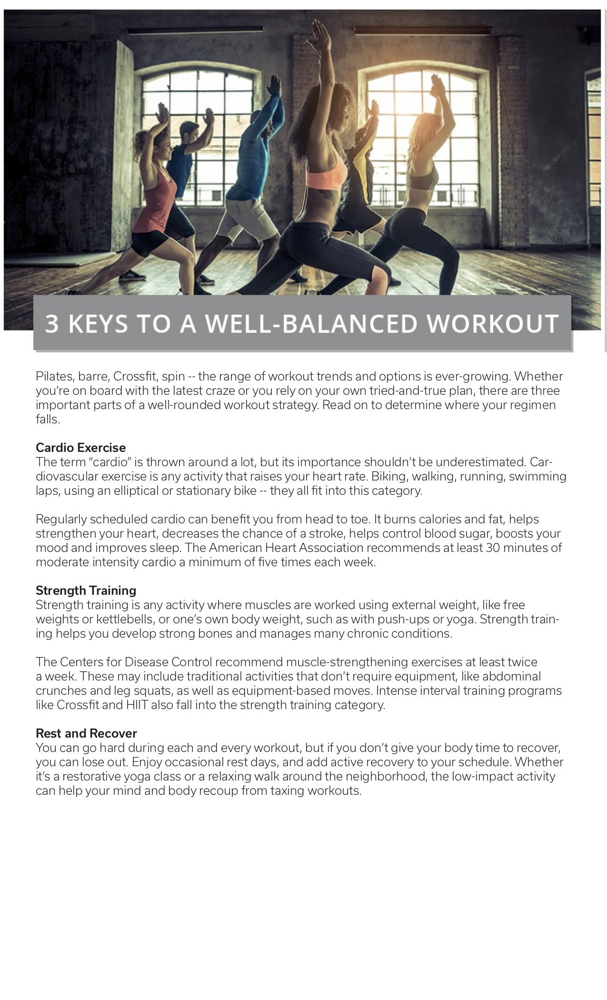
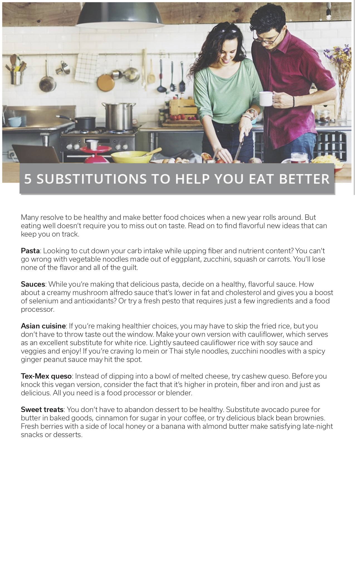
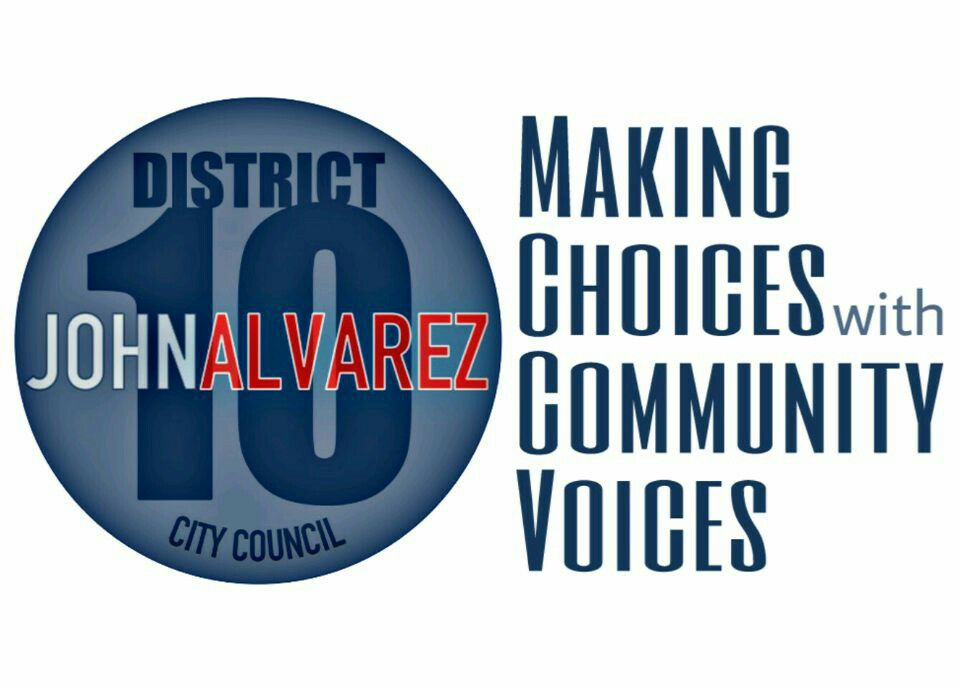

I'm a copywriter, editor, strategist, and journalist who has created compelling content for a variety of publications and organizations throughout my career. I've been a published essayist and copywriter for hire in places like Huffington Post, Reader’s Digest, and HipLatina. I am a creative customer-focused writer, adept at content strategy.I’ve written copy for multiple industries, including medical, legal, dental, beauty, education, and luxury real estate. I’m a writer who excels in generating increased readership and sales leads for products, causes, and people. I have tremendous integrity and knowledge of performance based marketing. I’m seeking work as an editor and writer involving the following topics.
Wellness
I have a decade of experience being a wellness professional as a coach, trainer, teacher and writer. I have created copy focused on all aspects of wellness including beauty and health.
Feminism and Motherhood
I write content that is focused on promoting empowerment and the well-being of women and mothers. I also write a personal blog about my experience with motherhood.
Political Campaigns
I have contributed my writing to several political campaigns in the form of slogans and speech writing. I am looking to take on more political work and work involving Not For Profit organizations in the next year.
Portfolio
This is a sample of the collection of the work I have produced over the past 5 years.
I started writing letters to my son Andy shortly after he was born, in an effort to not only record his childhood, but to also be able to authentically share my life experience with him in real time.
I believe that as parents, we owe it to ourselves to own our humanness and all things that come with it. Divorce, death, depression, these are real things that human adults experience.
Although not optimal, there is a wealth of wisdom and connection that can come from talking about these issues. That’s why I use Dear Andy to communicate with my son about what it means to be whole.
My hope is that he will one day read these letters for guidance and to learn more about his mother as a human. This blog is meant to inspire forgiveness, love, and growth.
As we come to love and accept ourselves, we are able to accept and love our parents and children more as we see them as they truly are.
I’m honored to feature some of the work of great writers and parents on this blog and my greatest hope is that their work, OUR work, resonates with others and allows each reader to feel seen, heard, and part of a whole.
On a cold, rainy morning in Austin, I sat down with Cristina Tzintún Ramirez in a cozy coffee shop. She’d ordered a cocoa for her two-year-old son, Santi, whom she spoke to exclusively in Spanish. She teased him that she’d finish his hot chocolate if he wouldn’t, negotiating and attending to him with the energy of any young, engaged mother. Little does this child know, as he pushes the boundaries with his ever-patient mom, that she is a leader, organizer, and senatorial candidate that is changing Texas.
When Democrat Beto O’Rourke ran to unseat Republican Senator Ted Cruz of Texas in 2018, he ignited the passion of Texas voters, whose turnout increased by 18 percentage points from the previous midterm elections. Although O’Rourke ran an effective campaign and accomplished the revolutionary accomplishment of traveling to all 254 Texas counties before election day, he was still defeated by incumbent Ted Cruz by a narrow margin. Still, the momentum behind Beto in the race for Senate bolstered him to the primary race for president, which he bowed out of on November 1st.
The success of O’Rourke’s senate campaign and the momentum that followed is due in part to the change in voter demographics in Texas and also to organizations like Jolt Texas. Ramirez started Jolt in 2017, just after the presidential election. She was six months pregnant at the time. This wasn’t her original plan. Believing what many of the polls suggested, Ramirez thought that Hillary Clinton would be elected president and that she could take a few months of maternity leave to welcome her son and take a “break” from her career of 16 years. Ramirez had been advocating for workers’ and immigrants’ rights since 2000. In 2006, she co-founded the Workers Defense Project and served as its executive director for 10 years. When Donald Trump was elected president, Ramirez felt she had to do something.
Ramirez grew up in Columbus, Ohio. She’s the daughter of an American man of Irish descent and a Mexican mother from Michoacán. She says that the experience of having a brown-skinned, Spanish-speaking mother and an Anglo-American father taught her the difference between how white Americans are treated versus how people of color and immigrants are treated. This sparked her passion for workers’ rights. She founded Jolt with the mission of mobilizing the Latinx vote in Texas. The idea was simple: engage with young Latinos in Texas, making them aware of the potential voting power they possess, and help them register to vote.
Today, 11 million Latinx live in Texas and 66% of Latinx voted for Hillary Clinton in the 2016 election. Ramirez believes that it serves the interest of Republicans in power to suppress the turnout of minority voters. That’s why Jolt was created. When I asked her about those in the Latinx community who vote for mostly conservative candidates, she says that it’s important to help these voters see that Latinos have common interests and collective power. “We need people to realize that these aren’t just attacks on immigrants,” she says. “These are attacks on all of us. When the rhetoric focuses on fear-mongering about immigrants, that’s how lawmakers get away with not funding our schools, and that affects everyone.”
Ramirez didn’t intend to run for Senate in 2020. But just like the creation of Jolt, it was something she felt called to do. As a mother to a young child, she felt the time wasn’t personally advantageous for her. But after seeing the huge potential for change, she decided it was the right time for Texas.
“We have to say what we stand for, instead of just saying what we don’t,” she says. “It’s not enough to ask for an end to children in cages. We need to overhaul the immigration system and not sell out border communities as Democrats have done in the past. There are so many who are willing to hire immigrants and beg for the votes of Latinos while failing to recognize our full humanity.”
There are 10 candidates currently running in the primary election for Senator, four are women, two are Latinas. When I asked her about whether she thinks sexism will play a role in the primary run for senate, she points to the prominent female leadership that has emerged from Texas in the past. “Texas has had several powerful female leaders,” she says. “From Ann Richards to Barbara Jordan. But we say to dads running for office, ‘Thank you so much for your sacrifice’. And then we make women who are running feel like they are bad mothers.'”
She says she wants to unseat Republican incumbent John Cornyn for several reasons. She points to the fact that 1 in 6 Texans are without health care. She’s also passionate about putting Texas at the forefront of a transition to a greener future. But mostly, as a mother of a young son and as the first-generation American daughter of a Mexican immigrant, she wants to instill a sense of empowerment to each Texan and to help enhance their quality of life. “With everything I do, I want people to feel three things: a sense of security, a sense of belonging, and awareness of their own power. And I want to make Santi proud.”
We ended our conversation with a hug. She scooped up her son, double-checked for their belongings and informed me that she was off to a day of calls and meetings. In 2020, Texas will have a choice for who they want to represent them in the United States Senate. Will they choose to reelect 67-year-old John Cornyn, who’s served in the Senate since the Bush administration and has stood by Donald Trump? Or will they choose a new face, someone who represents their diverse interests and calls on them to utilize their collective power? Regardless, Ramirez wants to encourage all Texans and Latinx to vote in every election. “When people come together and they can see their common interests, they are unstoppable,” she says.
Every year on Christmas Eve, they were there for us. Warm, spicy, and familiar, the smell of tamales would fill our kitchen as my grandmother opened her large, aluminum tamalera. She’d spend the days prior making trips to La Michoacana Meat Market to get the ingredients to make the perfect, red pork filling, always remembering to get me a marranito while she was there. Since her passing, I can’t help but think about the tradition that we as Chicanos hold dear each holiday season and wonder about its cultural significance. For Chicanos, tamales are one of many staples of our traditional diet. But unlike tortillas and salsa, they hold a special meaning, coming around solely for celebrations, holidays, and weddings. I asked the experts why tamales matter to our people and found out exactly why the taste of masa feels like coming home to so many of us.
The truth is, tamales are a part of our ancestral DNA as people. They’ve been around much longer than tortillas. Claudia Alarcon, an independent researcher of Mexican food and history, did her undergraduate honors thesis on the beloved tamal. She says that the origin of tamales can be traced all the way back to pre-Columbian Indigenous people of Mesoamerica. A mural in a Guatemalan temple dating back to 200 BC depicts what are thought to be tamales. Many Indigenous tribes of Mesoamerica regarded maize as supremely sacred, believing that the Gods provided corn specifically to keep humans thriving. Alarcon says that many creation myths of Indigenous Mesoamerican cultures tell stories of humankind being created from corn itself. “We know that corn takes cultivating and great care,” says Alarcon. “Corn would not exist without the people and the people would not exist without corn.”
The foundation of the tamal is masa or maize dough. It’s cushiony, soft and can be eaten alone or filled with vegetables, meat, or cheese. Pre-Columbian tamales featured different ingredients than we commonly use today. They used quail, squash, or varieties of fungus to fill tamales. When Spanish colonizers arrived, they changed the common ingredients of the tamal, making pork, beef, chicken, and lard popular contributions to the tamales we know today. “It was a cultural and gastronomic exchange,” says Alarcon. “Cuisine all over the world would not be what it is without the event of conquest happening.” This means that tamales, like Latin American people themselves, are the result of cultural blending. Alarcon says there’s no one right way to make a tamale. “Each region has its own recipe, depending on what’s available in their ecosystem. Tamales offer a culture in and of themselves.”
Dr. Manuel Zamarripa is the co-founder and director of the Institute of Chicano Psychology in Austin, Texas. He says that tamales are a tradition that brings families together on holidays and connects them to their ancestral roots. “In terms of identity and cultural pride, tamales are a key piece for a lot of Chicano families.” Many Mexican American families hold gatherings to make tamales as a clan. Because it’s a labor-intensive process, these gatherings, or tamaladas, give families the opportunity to talk, connect, and share an age-old tradition. It’s a bonding experience that connects them to each other and loved ones that are no longer living. Alarcon is a native Mexican living in Texas. She says that tamaladas are much more important to Chicanos than Mexicans. She agrees with Zamarippa, pointing out that tamaladas are a way of preserving and celebrating Mexican culture. “When families get together to make tamales, it turns into a party,” she says. “It’s not a chore anymore.”
In a time when Latinos in the United States are fighting to be heard, seen, and recognized, the connection to culture can restore a sense of wellbeing for those in the community. “Food ties into our idea of ‘brown’ wellness. Food, art, interactions, these are the threads that we can hold onto. We’re able to celebrate our connectedness,” says Zamarripa. Although generations of Latinos in the United States may lose connection to their native tongue, their relationship to their home country, and even their sense of cultural identity, food reunites us with what it means to FEEL Latino. The tamale does this for Chicanos. Each holiday season, the ritual becomes an opportunity to remember- through smell, taste, and togetherness. We reconnect to our roots and feel a sense of wholeness.
In Texas, even non-Latinos celebrate Christmas with tamales. Zamarripa points out that this cultural exchange is beautiful and reminds all those that partake in the eating of another culture’s food to be aware of the meaning behind the cuisine and to be conscious about what it takes to get that food on the table. Many Latino immigrants work in American fields to grow and pick produce. They work in the kitchens of many American restaurants. They are the hands behind so much of what we eat. “They’re not just providing us with food,” says Zamarripa. They’re providing us with cherished holiday memories. It’s important to remember the people behind the food.”
Every Christmas, when we take those first bites of soft, spicy, tamal, whether we are sampling the hipster, vegetarian kind, or eating from the recipe left by our grandmothers, we find our way back home. Full bellies and hearts discover the meaning of the season, as warmth and togetherness become our focus. For a moment, the concern about our place in the world is no more, as we are reminded of the sacredness of what we receive from the earth and the strength and resilience of our people. Whether tamelada-prepared or store-bought, tamales allow us to feel legitimate. The history of Latinx people is a story of great civilizations, conquered and changed by oppressors, who created within us a permanent sense of questioning when it comes to our identity. And when we make the food they made, we remember that we are a blend. Each one of us is, to quote Alarcon, “a culture in and of ourselves.”
Date: December 19, 2019
Client: HipLatina
Category: Culture
Native Americans Share the Meaning Behind Their Most Important Traditions and Beliefs
In 2018, speaking Spanish in America has consequences. This week, two American women were detained by a border patrol agent in Montana for simply having a conversation at a gas station. Last week, attorney Aaron Schlossberg of New York went on a tirade against workers of a deli. His complaint was the employees’ use of the Spanish language. It’s no surprise that some white Americans are feeling more entitled to expressing their ignorance and scorn towards Latinx. President Trump, himself, referred to immigrants illegally in the US as “animals, not people” just last week. The current administration uses fear as a tactic to legislate and promote ideas that are overtly racist and xenophobic. We’ve been privy to this agenda since Trump proclaimed that Mexico wasn’t “sending their best.” As an American who supports our founding principle that all are created equal, I’m outraged. As a Chicana, I’m called to question what Latinx Americans like myself have lost in generations prior as a result of such ignorance and contempt and what we stand to further lose if this administration has its way.
I am the daughter of a Mexican immigrant and a Mexican American who has struggled to learn our family’s native tongue.
I grew up in a majority white middle-class neighborhood and never quite “sounded” the part to many either. Growing up, our elders spoke Spanish to each other when they wanted us to not understand what they were saying. I picked up phrases, the curse words, and some cultura via Los Lobos, Cheech Marin, and Linda Ronstadt. But for the most part, my Spanish has been something that I’ve struggled to learn fluently.
I’m a product of years of assimilation, brought on by fear of oppression and a need to survive. My grandparents were Protestants who spoke Spanish but were experts of the code switch. As Texans in the early 20th century, their mission as Chicanos was to blend in. And to this aim— the aim for survival, for prosperity, for better lives for their offspring— my ancestors “Americanized” themselves. They kept the language at home. They kept the food close to their hearts. Some changed their names. They aimed for whiteness because it was the accepted base line for normalcy. And with the path they carved for future generations, the culture was buried within us.
Now that we are living in a retro-racist society, one that rallies to “Make America Great Again” (a call to arms for all who embrace white supremacy) it’s time for “Americanized” Latinx like myself to find and embrace the ever-present and leftover seeds of our cultura.
If white supremacists are to be unapologetic with their backward thinking than I am determined to equally resolute and proud.
Because like many Latinx, I am the living embodiment of dreams imagined by generations of soldiers, business owners, mothers, and heroes. This is why I’ve started the long journey of taking back my culture, and nurturing it gently in the ground to watch it grow and rise.
It won’t be easy. It will mean learning and speaking Spanish and openly admitting “Necessito practicar” to anyone who will have patience in the fact that I don’t have my past and present tenses differentiated. It will mean teaching my son the language that his ancestors were afraid to teach their children because of small men like Aaron Schlossberg. It will take cooking the recipes my grandmother left behind, and trying to honor her in replicating the tastes and sharing them with my friends and family. It will mean continuing to reflect on my family’s stories of what it must have been like to be a Mexican immigrant, or a Mexican-American in a blatantly racist 20th century, trying to raise a family. It will take immersing myself in the parts of the culture I want to take forward and grow in my own family. Mi cultura is feminism, and intersection, and embracing and understanding our beliefs. It’s supporting businesses and art created by Latinx and working to elevate our cause. It’s educating myself about and fighting for legislation that helps my community. It will take writing our stories, again and again, and speaking our truth.
It will take understanding what our cultura means to me.
I recall the day my husband and I went to the DMV after we were married. After waiting for hours, we were told we’d need an annulment for me to add both my married and maiden names to my license since only my husband’s name was on our marriage certificate. I cried. I wasn’t prepared to lose this part of my heritage. Although proud to be gaining my husband’s Jewish name, I mourned the badge of cultura that my family name had allowed me to openly parade. I thought my identity as a Mexican American woman was based on superficial things like name and language, but now I realize it’s so much more. For me, cultura is a combination of how and what we were taught, how we love, and what we believe and teach our children.
I know I’m not alone when I say I am deeply disappointed by your racist tweet featuring MS-13 gang members. Before you go on dismissing me for using the “R” word, that big, bad label us liberals give to people we “disagree” with, I need to tell you the basis for my very careful choosing of that word, so that we may both learn something from this experience.
Your tweet depicting a group of gang members as “Nancy Pelosi’s campaign committee to take back the house” was intended to paint her as a gang sympathizer. There’s no doubt about your intentions. You must have known how this would look to your base. You were attempting to paint someone who is a leader of a party advocating for the rights of immigrants who deserve due process and basic human rights as a being soft on crime. Even before the 2016 presidential campaigns, you and other in the Republican party have equated immigrants to criminals. President Trump is included in the class of Republican politicians demonizing hardworking immigrants for minuscule political gains.
What you refuse to acknowledge in doing this is the many Latinx Americans who are painted in a negative light because of your fear mongering. Those of us of Latin American heritage have continuously been flagged by leaders of your party as “rapists,” “criminals” and “animals.” It is no wonder then, that so many Americans are now open to the idea of putting immigrant children in cages. Those are the confines to which (dangerous) animals belong.
I know many of your ilk are quick to distinguish yourselves as not being racist. When you make racist remarks, jokes, or generalizations, you quickly point out that aren’t talking about “us.” You certainly don’t want to ostracize any potential voting block, no matter their skin color. But, you are talking about us.
Governor Huckabee, I’m an American daughter of a Mexican immigrant father and a Mexican-American mother. I was born in Texas and was educated in Ohio. I have lived among upper-class white people my whole life. I am familiar with the defense “Oh, I didn’t mean you” when defending a joke or a controversially demeaning stance on immigrants, especially those of us from Latin American countries. This has been my whole life. As a white looking, American-educated woman of Mexican descent, I have privilege that isn’t afforded many of my Latinx brothers and sisters. It’s always assumed in my presence that people with your philosophy are in safe standing when airing your viewpoints. I can assure you, that this is not the case.
No one you encounter is fine with this casual racism, no matter how well you think you know them. Anyone you work with, share dinner with, or meet at campaign events, who is a member of any marginalized group, is exhausted with being told we are the exception to your unwitting hatred. We are all offended. We’ve just gotten so used to being offended that many of us swallow our true opinions at the risk of being viewed as “uncivil.” We ought not be compared to animals, after all. And of course, you’ll find those rare exceptions, who will gladly go along with the joke, or make themselves a case for how they are different. Perhaps their parent was a refugee in the 1950’s, but that’s ok because it was a different time. They will side with you, making a case that there are those from “el otro lado” who have no place here with real Americans. Those people are the saddest among us. They are so terrified and in need of ensuring their survival, that they will sever any source of empathy, and reject the instinct to identify with their ancestors.
We are living in sad times. I know it hurt your feelings when your daughter was lambasted at the White House Correspondents dinner, and when she was refused service at the Red Hen. I wonder, as a parent, if you are able to feel empathy for your own daughter (and she for her children). How exhausting it must be to reject empathy towards all people different than you. To reject the sights and sounds of caged children, to continuously tell yourself it’s for their own good. How difficult and sad it must be to distance yourself from God himself, by inspiring fear in others. How terrifying and lonely it must feel to have the ability to love but to be suppressing every instinct thus in order to perpetuate hate. As the book of John (2:9) tells us “Anyone who claims to be in the light but hates a brother or sister is still in the darkness.”
I want you to know, as a Mexican-American, whose relatives have fought in wars for the United States, and contributed as business owners, mothers and therapists, you are hurting us. When you attempt to make the distinction of “I didn’t mean you” to any one of us, please know that’s not good enough.
Racism is uttered in the very attempt to defend your ignorance. I’m telling you now so that you can see the error of your ways. You were a reverend, isn’t that right? Do you believe that you are following God, even today? Because I’d argue that God’s way isn’t separation, and name-calling, and painting whole swaths of people with one demeaning stroke. You know this to be true in your heart, sir. As a father, I’d have to assume you see the damage you’re doing to God’s children. “When a foreigner resides among you in your land, do not mistreat them. The foreigner residing among you must be treated as your native-born. Love them as yourself, for you were foreigners in Egypt.” (Leviticus 19:33-34)
But, perhaps I’m being too idealistic.
Perhaps your brand of empathy only extends to your own children, wife, community, or, narrower perhaps, your political party, which you place before God and country. Perhaps you can’t be swayed by “civility,” which many in the Republican party have called for since Americans voiced outrage at the caging of innocent migrant children. Let the broken hearts of the citizens of this nation remind you of how to lead with love.
What I want to tell you, if you read this, is that we are already here, sharing the same country. No matter the language or tactics you use to stir hate and fear in white America with the threat of being “infested” or “invaded”, as your leader says, we are here. We walk among you and with you. We and the refugees from other nations deserve to be seen as human beings. If you cannot do this, I fear your heart will continue to plunge into the darkness you have begun to embrace.
As much as terrorists and gang members from other countries pose a threat to our nation, the seeds of hate you aid in planting do the same. Fear leads to hate, which leads to alienation, and ultimately violence. The same kind of hate and fear that led to the attack on protesters in Charlottesville, Virginia. I implore you to turn away from the darkness and lead the way into the light.
Do not shirk the American or Christian tenants of due process, fair treatment, and loving of your neighbor (Galatians 5:14). God, and your Twitter followers, are watching.
No mother in the midst of a perinatal mood disorder should feel alone. No parent experiencing anxiety, depression, or crippling grief from pregnancy or infant loss should feel they have nowhere to turn. The feelings that 1 out of 7 mothers experience in the perinatal period can cause them to feel isolated and filled with shame. These feelings are made worse by a systemic lack of support in a country that does not guarantee paid paternal leave and access to healthcare. Not to mention that the United States is the most dangerous nation to give birth in the developed world. This statistic is more alarming for women of color, who are three times as likely to die from complications of child birth.
As cases of mental illness and complications from birth continue to rise, birthrates among this generation of potential parents is sinking. Though it can be attributed to a variety of factors, the statistic speaks for itself. Mothers, fathers, babies, families, and communities are more in need of advocacy and support than ever. And if we are to be a thriving nation, we must begin with helping families to thrive. This will take legislative progress on the part of family services and benefits. It will take an increased awareness around mental health and perinatal mood disorders. Most of all, it will take supporting new families and being there for them in their time of need.
This is where PPHA comes in. The Pregnancy and Postpartum Health Alliance of Texas was created in 2010 in Austin, Texas, by mothers and mental health professionals who saw a disabling void in the maternal health care system. Families in Austin were in need of resources, so that they could easily find health care providers who could help them through the depths of perinatal mood disorders like postpartum depression. They were in need of a community, that could help erase any negative stigma around mental illness and parenthood. Under-served and low income families were in need of services that were not available to them, because of a lack of health insurance or financial resources. The founders of PPHA saw this need, and they came together to create solutions.
Since then, countless mothers and families have been impacted positively by the work of providers, doulas, and volunteers through PPHA. But although non-profit organizations like this one create great strides in progress for their communities, they often do so without funding. PPHA relies chiefly on donations from benefactors who are passionate about supporting moms and families. Luckily for PPHA and for those experiencing perinatal mood disorders, the call for help has been heard by a vast community of benefactors from Texas and all over the world.
As we continue to expand our reach, aiming to serve more families each year, we ask for donations. This time of year is especially important, as it’s our annual drive for fundraising through Amplify Austin. All day on February 28th, we’ll be asking for donations to reach our $15,000 goal. With your help, we’ll be able to continue to answer the call for help from all affected families. Our impact is lasting and life-changing. Together, we can continue to create a community that supports moms and families in some of their darkest periods of need. To schedule a donation, go to https://www.givegab.com/nonprofits/pregnancy-postpartum-health-alliance-of-texas-ppha
Use of mercury amalgam was common in traditional dentistry. But many today, including our team here at Spanaway Dental Wellness, have turned to mercury-free alternatives for the health and safety of our patients. If you’re interested in exploring mercury-free dentistry, here are the facts.
What Is Dental Amalgam?
Amalgam is a composite of silver, mercury, tin, and copper that can be utilized for fillings and crowns. This technique has been used for over a century, since 1895. The positive side of amalgam use is that the fillings are durable. The negative side is that some may have a negative or allergic reaction to the mercury in the formula. For this reason, many dental practices opt for other materials for their restorative procedures.
What Is Mercury-Free Dentistry?
Resin composite fillings are more commonly used to fill teeth today. They are a special composite of ceramic, plastic, and resin. These fillings have many benefits compared to traditional mercury fillings. For one, their white or off-white appearance is more natural-looking. Additionally, they bond easily to teeth and are mercury-free, which is a healthier option for those who are mercury-sensitive. The drawbacks are that they don’t last quite as long as mercury fillings, and not all dental plans cover resin composite fillings. So when you’re looking into a dental insurance plan, make sure you know what kind of treatment is covered.
What Is Best for Me?
At Spanaway Dental Wellness, we prioritize your health and wellness. We are happy to offer options that meet your unique dental and financial needs. Please call us if you have any questions about mercury amalgam removal for fillings, or questions about how we fill teeth at our office. Our team strives to support the wellness of your whole body by helping you achieve a healthy and beautiful smile that lasts.
Date: April 22, 2019
Client: Spanaway Dental Wellness
Category: Health
The Handmade Mama: Simple Crafts, Healthy Recipes, and Natural Bath + Body Products for Mama and Baby
In the wake of the recent domestic terrorism attack in Charlottesville, many are wondering what can be done to fight oppression and hate. Oppression and systemic racism have long had a strong hold on our nation, but
with the circus that is the current presidency, blatant racism is on the rise. White supremacist groups are marching in the streets and threatening violence to all that oppose them. It can be difficult as a yoga
student or teacher to know what to do in these instances when you want to stay Zen but also want to punch Nazis. Here are 10 things you can do now to resist hate and fight oppression.
1) Teach or attend a yoga class
for a cause. Host a class to benefit the ACLU or Planned Parenthood, or attend a class that is giving back to a cause you believe in. It will feel good to give your money and energy in support.
2) Call your senators
and representatives at (202)-224-3121. Many of you may already do this. Great job! Don’t stop. If you’re not already doing so, so much of this battle is fought on the phones and through emails. Contact your representative
and let them know what you think. Attend town halls if you’re able. Resistbot can make it that much easier if you feel too busy to call.
3) Champion yoga teachers of Color. The typical image of the yoga teacher
is that of a slender white woman. Yoga Journal covers have perpetuated this for years and it’s well beyond time for change. People of Color need to know they have a place at the yoga table, as teachers AND as students.
Attend classes taught by People of Color. Hold space. If nothing else…LISTEN.
4) Confront and correct. As yogis, we tend to be people pleasers and empaths because we are also peace-seekers. It’s time to have those
hard holiday conversations with Aunt Mary or Grandpa Bob. It’s time to confront the offensive language and correct the ill-informed “alternative facts.” It’s not going to be easy. And this holiday season is going
to be rough for a lot of Americans. But remember the words of Krishna to Arjuna as he cowered at the idea of fighting with his family. “Give up such petty weakness and arise.”
5) Read (or re-read) The Bhagavad Gita.
Time to get back into the swing of knowing the Lord in all their greatness (if that’s your thing). The Bhagavad Gita gives us the courage to stand up to our foes, be they actual or proverbial, and to remind ourselves
that all things are transient and small, compared to the oneness we all are, beneath illusion.
6) Attend marches and protests. If you feel safe doing so, go. Be out there with the people and speak your mind. Take
up space. And most importantly, encourage peace. Yogis are supposed experts at this, after all. Go and be an example for peaceful protest.
7) Practice. If stress about the atrocities abounding in our world is getting
you down, return to your practice. This can mean on your mat in a class, or simply breathing. Practice self-care. Get a massage. Talk to a friend or therapist. Rest to avoid burnout. We need you, friend.
8) Read
about the history of yoga. There is a lot of talk about appropriation versus appreciation in the world of 21st-century Western yoga. Read about the origins of yoga. Read about India and yoga before it came to the
west and was popularized by movie stars. Engage in conversations, if you’re able, with someone from India about what yoga means to them. Listen. Learn.
9) Avoid trolls and triggers. Y’all know what those comments
sections are like. They are where benevolence goes to die a slow death, covered in fast food barbecue sauce. Choose your battles wisely. Also, avoid the pitfalls of being accused of being “non-yogic” or a member
of the “intolerant left.” People use these words on you because they KNOW you want to be a good, tolerant person, and they will throw that super power in your face as kryptonite. Speak your mind with love and strength.
Don’t back down.
10) Use inclusive language when teaching or promoting yoga. Not only when it comes to diversity, but also politics. Remember some people in your yoga classes may have voted differently than you
did. They might hold completely opposing beliefs. Yoga class is the time to promote self-study and embodiment. Try to be authentic without singling out people of differing beliefs. Yoga is the place to include ALL,
if you’re able. Save the strong convictions for your calls to representatives.
Client: YogaDork
Category: Wellness
Maybe She’s Born With it, Maybe She DGAF: Millennial Feminism & The Power of Makeup
I so admire beauty bloggers. I spend my morning free time drinking coffee and perusing through Instagram looking for the latest trends, just before my son wakes up. Some are surprising. Some are inspiring. As a writer and resistor, I’ve noticed that makeup
trends of today say much more about the state of our world than some might realize. Fashion has always been a marker by which to make statements that reflect the inner workings of the mind. But I would argue that never
before in history has makeup been so eclectic and free. It speaks volumes of a generation trapped under the weight of looming fascism, and ready to smash the patriarchy.
Today, makeup isn’t just about beauty. It’s not
about a sense of identity or belonging. It’s not even about covering up what parts of ourselves generations of consumerism told us were unacceptable. It’s about expression, and breaking free. Just look at any beauty
brand featured on Instagram. The daring ones have always been there. MAC has led the way to newer companies like Glossier and Colourpop, who are laying out the contemporary face. And companies like Ipsy and Covergirl
feature not only women of all races in their ads, but men to challenge our idea of who can wear makeup and how. The question of why is up to the individual. But more and more, we see looks that make statements. You
can be wispy on Wednesday and savage on Saturday. And it doesn’t matter whether or not what you wear makes you look good. It’s about how it makes you feel. What does it allow you to say? What can a lipstick teach us
about being politically active? Millennials are seizing control of the conversation about what beauty is, what a woman can be, and how showing up is all you need to be seen.
I asked my friend and beauty blogger, Cate
Cozzens of @Catethegreatbeauty to help me out.
The BOLD BROW 2017 ushered in the era of the bold brow. And we’re not talking about your mother’s 1980’s feather look. We’ve skipped over Brooke Shields and straight into
Lydia Deetz territory. It’s about a stern gaze, and unwavering confidence. The look says “I Bite.” It’s about fearlessness and challenging the onlooker to see past the perceived feminine and straight to the power. It
says “No means No.” and “I’m here for me.” The Bold Brow is to 2017 what shoulder pads were to 1987.
The CLASSIC RED Women have worn red lipstick for decades. The 1940’s and 50’s led the way in projecting this as the
one look women were allowed. Now, with the unlimited choice of colors, wearing red lipstick is a statement. It doesn’t need to be completed with a winged eye or false eyelashes. Today, a bold red lip and no other makeup
projects choice, autonomy, and a dedication to a new ideal of feminine. It’s about simplicity and boldness in one primary color. It’s worn in 2017 not only on special occasions, but to the gym or coffee shop. Red lipstick
denotes vivacity and life force, without being coy.
The BOLD LIP The bold lip is a staple of DGAF millennial makeup. When I was in high school, black and blue lips were taboo. Now, they represent the notion that you
can literally wear whatever you want. You can have glam, understated eye makeup and rock a blue, gray, or deep purple lip. It’s not just for rock concerts or sullen teens anymore. It’s an expression of a demand for
a more just society. The bold lip look signifies bravery and sense of self-possession.
The NUDE LIP It feels like everyone today is rocking a nude lip. The nude lip is a power move. It almost allows the mouth to blend
in with the rest of the face. It’s a way for a woman to signify the mystery of her inner thoughts, and also to acknowledge the forced silence of women throughout history. Nude is sexy because it is barely there, but
also because it says you’re wearing lipstick for you, and don’t care if anyone else sees it. It doesn’t enhance the color of the face, but keeps the onlooker wanting to know more. The nude lip is the way to embrace
being sexy, without needing anyone’s approval. This defines millennial feminism. The Magic Unicorn The Unicorn Look is the peak thrive of DGAF makeup. This is the generation that grew up with Lisa Frank, My Little Pony,
and The Labyrinth. There is no longer the need or desire to conform to “age appropriate” looks. Millennials want sparkles, iridescence, and unapologetic color that blends magically and seamlessly. When nuclear war could
be a reality at any moment, the need for bomb shelters has given way to a YOLO sense of style. The Unicorn defines this. We seek the refuge of the innocence of youth, while knowing that the magic we create as adults
is possible if we don’t allow anyone to stand in our way.
In a time in history when cultures are blending together and becoming awake to the collective and differing experience of others, makeup is something that can
free us. Makeup allows us to pretend in a time when escape is what we crave, but our attention is a sense of moral duty. To all the people out there looking for their glam, know that you can be anything on any day and
not lose a sense of who you are. The truth is in consciously choosing to see the beauty, daring, and power of yourself and others at all times.
1. Please describe, or tell a story, about your first yoga class or yoga experience. My first experience with yoga was in high school. I went to a school for the arts to study theatre, and our teacher introduced
us to sun salutations as a way to get into our body and breath. When I went to college to study theatre, again our acting teachers thought yoga was an important tool for actors. Both in high school and college,
I hated it. It made me feel silly to do and I didn't understand the point. My first experiences with yoga have made me understanding of those who come to the practice with a lack of patience or skepticism. The practice
is not easy, and can be challenging in its simplicity at first.
2. Describe or narrate your first time teaching yoga. What do you recall? My first time teaching yoga I was very nervous, but I had the support
of friends. I started an after-work yoga group for my coworkers. We were waiters in Manhattan so I called the karma project "Yoga for Waiters". My goal was to serve those who serve others (literally) all day, and
to address sore and achy legs, back, and feet, as well as emotional fatigue. My friends were very supportive, as I recall. I'd pay to rent the space, and they'd donate whatever small change they had. I had between
10-15 people in every session, and we had a lot of fun practicing together. I remember going back to my notes and nervously checking to see if I was on track with my plan. After a few months of teaching with notes,
I realized that approach did not work for me. It served me more to simply be in the room with my students and have them determine our course. I have taught without notes or a lesson plan ever since.
3. Last
time you took a yoga class or workshop, what were your impressions? The last time I took a yoga workshop was a "Heal Your Back" type of yoga therapy workshop. There was a good mix of teachers and yoga students
looking to improve their health. What occurred me then is the desire for people to find a "specific" or "right" way to do yoga to "fix" their current situation. A friend and I have been recently discussing the idea
that we are whole, despite the fact that we are often told otherwise, and that the idea that yoga or poses or alignment can "fix" you is a fallacy. My friend, Gigi, and I are now planning a workshop, wherein the
emphasis will be on the experience of the body in movement, and not on healing or fixing. We believe that exploration can, in itself, be healing enough.
4. Describe the last time you taught a class or workshop. The last workshop I taught was on the anatomy of the shoulder and yoga asana. The students that attended were very willing to explore and play, and I had the opportunity to guide them at a slow pace. I usually teach
Hatha classes, and there is less time to dive head-first into this kind of work. It occurred to me while doing this workshop how much I love this kind of conscious, slow, exploration in asana. I look forward to
continuing with more embodied anatomy workshops here in Austin, Texas.
My older brother John has always been a natural leader. Growing up, he always stood up for me and every other kid who was in need of support. I remember helping my mother make his campaign signs for student council president in grade school, so it was no surprise when he told me this year he was considering running for city council in San Antonio. It was before inauguration day, but tumult had already begun to sink its teeth into our collective consciousness. As I write, in large cities all over the country, immigrant communities are being targeted and in my city of Austin, people have been detained and await news of their future. It’s an unstable time for many, but specifically for brown Americans.
My brother and I were born in South Texas, during the time Henry Cisneros was mayor of our hometown, San Antonio. We grew up in a city with a large Mexican American community. We never felt the need to defend our American-ness, although my grandmother told us stories of how she’d been discriminated against because her last name was Acosta. Like me, she had light skin and therefore, the privilege of fitting in until her identity was fully revealed. She aimed to assimilate. Her husband, my grandfather, was dark skinned like my brother. And although we all are from the same family, our experience as white and brown Chicanos is markedly different. I have never been more cognizant of that fact as I am now.
When Donald Trump announced his candidacy for president and declared on a national platform that Mexico was “not sending their best.” and asserted, “They’re bringing drugs. They’re bringing crime. They’re rapists.” It struck a nerve in the entire American Latino community. My family was no exception. As the daughter of a Mexican immigrant who served in the army during the Vietnam War, I was offended to say the least. With every bit of hateful rhetoric and consternation that has ensued since this announcement, I have grown increasingly angry, even hopeless at times. But my brother has taken a different approach.
John was always more patient than I, always more hardworking, and a little more diligent when it came to listening and following directions. He was always slightly more cautious and thoughtful and deliberate. His decision to run for office is a result of that reasoned passion. It occurs to me now as I spend time spouting my views on Facebook and ranting my anger that although we are blood related, my privilege is greater than his. As a white hispanic woman, I can afford to be more vocal about my anger. I can be more contentious, outspoken, and unapologetic. My brother has always been brown, and I’ve begun to wonder if his caution is a result of having to always know how to win over those who underestimate you upon first glance. Whatever the reason, his measured strength and understanding of human psychology could make him one of the greatest leaders of our generation.
Although Latinos have always played a vital role in forming and sustaining the United States, they are the minority when it comes to leadership in American politics. There are currently only four Hispanics serving in the Senate, with a slightly more encouraging number of 34 currently serving in the House of Representatives. But this is still a massive underrepresentation of the population. There are now over 55 million Latinos living in the United States. Hispanics have served as governors, mayors, and have held presidential cabinet positions in the last century, but have never led a party ticket in the nomination for president. With views like those espoused by our current president, it’s not difficult to see how racism is limiting further pursuits by Latinos seeking positions of leadership.
While this nation is remembering its roots of bigotry, intolerance, and racism, it is also recalling its spirit of activism. As this generation is thrown from the nest of the belief that all people are for equality, we are called to engage by employing our truest gifts. For some, that will be creating art or teaching. For men and women like my brother, it will be leadership and civic engagement. I want to believe that all people who feel the need to represent an undervalued demographic or isolated group in our society will seek out these positions, as my brother has. Because the Donald Trumps of the world need to see what we are really capable of. The time for Latinos in America to be present has come, as we are called to speak, write, lead, and teach. The only way is forward, and thoughtful discourse in multiple languages is required. Latinos in the United States have contributed as soldiers, entrepreneurs, artists, and community builders for generations. But we need more Latinos in politics to contradict the dangerous narrative that brown skin or speaking Spanish is somehow less American. Before Barack Obama famously urged Americans to believe “Yes, We Can”, civil rights activist Cesar Chavez said it in Spanish. Latino Americans are needed in leadership now more than ever, and the answer to whether they will succeed is in our history. “Si, se puede.”
To touch, or not to touch? This is one of the dilemmas we experience as yoga teachers. In yoga, adjustments can be a matter of personal preference. Recently, I’ve had many discussions with teachers about adjustments and their opinions regarding the subject. If you are unaware of what an adjustment is, it’s what it sounds like – the yoga teacher puts his or her hands on you while you are in a yoga pose to help you deepen the pose or to help “correct” your alignment. For some yoga students, adjustments are a given, and they expect to have them in class. In fact, if you search Yelp reviews of your town’s local studios, you might find complaints about “hands-off” teachers. Some students become very used to this treatment, and some argue that it’s the only way they know they are doing something “correctly.” But is putting your hands on a yoga student the only way to ensure they are receiving the benefit of the practice?
One of the yoga studios where I teach recently implemented a new strategy wherein the students can let the teacher know if they prefer adjustments or not via “yes” or “no” cards. To me, this is a brilliant approach. A teacher at the studio recommended it, and she’s experienced enough to know that not everyone appreciates the hands-on approach. As yoga teachers, we must be aware of the different circumstances with which our students may be entering into our classes. For survivors of physical abuse, having a stranger touch you, even in a helpful way, is not relaxing. For some, touch is not appealing, and can even be damaging.
When I first started taking yoga, I received a damaging hands-on adjustment from a yoga teacher in fish pose. If you don’t know which one fish pose is, know it’s one you don’t want to be yanked into. But here I was, a novice student, trusting the professional with her hands on me. I believed she had only the best of intentions and enough experience to know how to guide my body.
My neck hurt for the following two weeks.
Now, this isn’t the teacher’s fault, necessarily. Teacher training programs often stress the importance of hands-on adjustments, as if they are a basic element of the practice. But with only 200 hours required to teach yoga, and with only a minimal percentage of those hours covering the topic of anatomy, how are we to know that the professional touching us has the proper training to do so? The answer is: we really don’t know. If your teacher has recently completed his or her first 200 hour training, they may not know what they are doing as they approach your body with their hands, their weight, their force. They may not be experienced or educated enough to make these adjustments on your body.
But what about the other teachers out there? The ones that have extensive anatomy training, or know the map of the human body from other manual therapy trainings they’ve had? If you have one of these teachers as your guide, you are literally in good hands…except for one thing. A teacher can know everything about the human body, and still not know ANYTHING about yours.

When a student first comes into my class, I do as many teachers do and ask them about their injury history, and history with yoga. I base our practice around how the new student responds. I absolutely give no hands on adjustments without prior knowledge of the student’s body, or without a dialogue as I’m giving the adjustment. If I put my hands on you, I will first say “I’m going to put my hands ___ and guide your ___ to do ___.” I will not put my hands on you without speaking if we have no prior relationship. If you come into my class, you can expect a hands-on adjustment, but not without a conversation. If you are looking for someone to push you deeper into a pose in silence, I cannot give you that unless you and I have had many classes together and WE BOTH understand the abilities and limitations of your body.
Now, this may make me sound like a stickler. And I’m okay with that. Because even though it’s magical to be in a silent meditative state and have a teacher push you further into a state of “bliss,” I’m not going to be the one that sends you away with a sore neck, or a torn hamstring, or causes you to feel vulnerable in a way you aren’t ready for. Even though we live in a litigious society, it isn’t the legal repercussions I’m most concerned with. I have insurance, as do the places I teach. My concern is for my integrity as a teacher and, if you want to call it this, my karma.
When you enter into a class I’m teaching, it’s my job for the duration of that class to protect you from both of our egos. This means that I promise not to arbitrarily place my hands on you because I want you to “look” a certain way or do something “correctly.” I’m there to keep you safe, to help you have an experience of your own body, mind, and breath. I’m there to help you learn more about your body and how it works, and I will do my best to keep you from hurting yourself. Whatever pains you come with, I want to help you alleviate, and whatever bliss you find, I want you to take with you. As your yoga teacher, I’m not going to give you an adjustment unless it’s a necessary step on the path of that intention.
The power of human touch cannot be understated. It can be incredibly beneficial to have someone place their hands on you as a form of therapy. Studies have shown that touch can be healing, both mentally and physically. Conversely, however, the nervous system controls your muscles’ ability to stretch, so if you, as a teacher, approach someone who is tense, you may be doing more damage than good. It is important to always consider your intentions when adjusting a student. For students out there, don’t be afraid to start a dialogue with your teacher. Ask them why they are doing what they are doing and let them know how it feels when they touch you. Always ask for what you need and listen to your body. It is the greatest teacher.
When I became a mother, I became a feminist. I was always for equal rights, but becoming a mother gave me a front row seat to the struggle of women and the strength they must possess to endure and overcome all they are up against. Systemically speaking, sexism exists across a broad spectrum. But there is a place in the United States in the 21st century where sexism is especially deadly. Here misogyny dictates a woman’s right to make decisions about her own health and well-being and that of her family. This threat is so great that more women and newborns are being carelessly neglected to the point of death. This place is my home. This place is Texas.
More women die in childbirth in the state of Texas than anywhere else in the developed world. The mortality rate of mothers here has steadily risen to a rate close to 40 in every 100,000 live births, and shows no sign of slowing. That is staggering, and should give everyone who cares about “family values” pause and the inspiration to find a solution. But unfortunately for Texas women and families, the legislative bodies of our great state do not prioritize women’s health, much to the detriment of our communities. As we speak, the Texas governing bodies are seeking to pass bills that limit women’s access to affordable health care, affordable birth control, safe and affordable abortions, and access to education about contraception and family planning. One such example is HB214, which recently passed the house. Some are calling it the “rape insurance” bill. It would require that women pay higher insurance premiums to cover an abortion except in cases of emergency. If you get pregnant from rape or incest, you’re basically out of luck. And yet, our congressmen and state senators continue to enjoy employment and the opportunity to create dangerous legislation that jeopardizes the lives of Texas mothers and babies. The multi-tiered solution going forward must include better leadership in Texas.
As a mother, a wife, and a feminist, I have been livid at the state of the country and its blatant disregard for the health and prosperity of women. I actively research and seek out candidates who are champions of women in all regards. In Texas, that includes placing the health of women as a priority in a campaign platform. I have found such a candidate in Chris Perri, who is running against the Republican incumbent, Roger Williams, for a seat in the U.S. House of Representatives. When I met Chris, he made it clear to me that he felt strongly about the assault on women’s health. He feels passionately about many issues, including universal health coverage and criminal justice reform, all of which I agree are top priorities. But as a woman, to hear a man address the importance of choice, rights, and good health care for women in Texas is a refreshing change to say the least.
Recently, Chris invited me to sit in on a round table with local experts in women’s health. This panel discussion was eye opening. It included an emergency room physician, a ObGyn, an educational activist for women’s rights, and a mom who is a compelling pro-choice advocate. Among the topics addressed was the limited access to health care for women in our nation. Both doctors, Dr. Ryan Allen and Dr. Nancy Binford, mentioned that low income women without insurance often went the duration of pregnancy without seeing a doctor, unless there was an emergency. This lack of access to care can lead to dangerous situations around pregnancy and delivery. Kearstyn Takemoto mentioned the misleading terminology regarding “safety” for women used by the legislature. We also saw this despicable use of the term used to push the hateful bathroom bill earlier this year. While claiming to champion women’s safety and the safety of newborns, ensuring limited access to healthcare providers like Planned Parenthood is actually making Texas moms less safe. In fact, a recent study found that after the state slashed spending to family planning and Planned Parenthood, the amount of abortions increased in Texas. This goes directly against every Anti-Choice advocate’s desired goal of limiting abortions in the United States. If they actually cared about less abortions in our state, they would advocate to keep clinics like Planned Parenthood open for the purposes of safe sex education and affordable access to contraception.
I want to highlight one person who was on the panel. As a mother, her story struck me as particularly important. Darla Barar is a fellow mother, Texan, and writer who is advocating for safe abortions by telling her story. Hers is that of a late term abortion, one that happened after 20 weeks with twins. When she received a troubling diagnosis for one of her baby girls, it meant that she was forced to make a choice no mother should have to make. She could have carried both babies to term, knowing that one would have a slim chance of survival and lead an incredibly painful and potentially short life. Continuing to carry her baby, Catherine, to term would also mean potentially endangering the life of her sister, Olivia. Darla and her husband made the excruciating and humane decision to terminate Catherine’s gestation, in order to give her sister a chance to live and be healthy. At the panel, Darla brought her beautiful 11 month old daughter Olivia. She has one living baby, but it’s evident that Darla carries both of her children in her heart and that she holds Catherine’s memory as a source of strength. It would be easy for Darla to not share her story. In a state like Texas, legislating against choice can lead to stigma and shame around abortion. But Darla doesn’t want any mothers to suffer the choice she had to make and have to deal with the asinine road blocks imposed by legislators who care more about limiting choice than the lives of moms and babies. Darla spoke at this panel because she believes in Chris Perri and knows that the path forward for safer pregnancies, deliveries, and choice will come when we elect people who care about women and moms.
It was never my intention to take an interest in politics as I have since the 2016 election. Desperate times call for active measures, and this is not the time in our history to sit on the sidelines. We all must ask ourselves what we can do by speaking out for what matters most to each of us. For me, as a mom and a woman, I refuse to see my choices and the choices of other women taken away because of a lack of separation between church and state. I refuse to let other moms who suffer complications from pregnancy and birth to go without access to proper health care. I refuse to hear the stories of mothers like Darla and to allow one more woman to be expected to carry shame for doing what’s best for her family. I refuse. It’s for this reason that I will continue to advocate and show up for candidates like Chris Perri, and anyone who is brave enough to enact change and fight for the rights of Texans. Men can’t relate to the plight of women in our society. It takes imagination and compassion to care about misogyny, sexism, and choices for women. And I appreciate Chris for using his sense of compassion to educate and fight for others. This is the way forward in Texas and our country. As we care for ourselves, we must care for others. As the aftermath of hurricane Harvey recently showed us, this is the true spirit of the people of Texas. And so we must now extend it to women and families.
12 diet cokes a day. It’s enough to make the average person wince with caffeine fatigue. Reports by the New York Times state that Donald Trump, among other somewhat alarming habits, consumes a wealth of junk food to go with 4-8 daily hours of television watching. Last week, Michael Wolff’s book, Fire and Fury, went on sale amid avid anticipation of behind the scenes details of the White House. It’s become increasingly clear that the President has bad habits. Between this and early morning tweets, one can deduce that in addition to not eating well, he’s not able to fully rest and is frequently consumed with toxic thoughts that cause him to impulsively lash out on social media. It would be easy to sit in judgement of this man. His vices include everything from escapism, taking most weekends of his first year in office to play golf, to reported gluttony. We know from decades of being in the spotlight that the man has a penchant for flagrant spending and an appetite for women’s bodies and sex. Not to mention that he seems to rarely check in with himself before speaking, making much of what he says incredible, discreditable, and blatantly untrue. At times, his lack of impulse control has been dangerous, as has been proven by last week’s tweet exchange with North Korean leader, Kim Jong Un.
For the majority of Americans, these habits are easy to look down upon. As we other-ize our unworthy leader we feel disgust and scoff haughtily. He is so different from each of us, we tell ourselves. This racist, misogynist, easily distracted, narcissistic, fragile little man, is so different from each of us who’ve fallen victim to living in HIS version of America. It didn’t used to be like this, we tell ourselves. He’s made it different. He’s changed our country. Except that he hasn’t. And he isn’t different from any of us. That despicable thing we see in him sets off the revelatory repulsion we must accept when we come to terms with the fact that he IS us. Donald Trump is all of us..
The common self-deception that is at the core of our nation’s current plight involves thoughts like “I’m not racist” or “Not all men are Harvey Weinstein”. As liberals decide that racism is a characteristic of one party, they absolve themselves of the responsibility to look within, to come to terms with, and to ask forgiveness for collective wrong doing. It’s systemic, we’ve decided. But I didn’t do it, we conclude. If the “Me Too” movement has proven anything, it’s that if the majority of women feel that they’ve been oppressed by the majority of men, then there isn’t an innocent soul in existence. All who have benefited from a system of oppression, be it involving the degradation of women, people of color, or the environment, have a part in having created the greatest joke in the history of American leadership. But the joke’s on us..
We created a golden calf. We worshiped gains, went to school for business, denied the wrongdoings of generations before because it made us uncomfortable. We ridiculed women and took mothers for granted. We erected monuments and museums to remember the pain caused by our ancestors. But we forgot to be sorry. We instead buried the worst of our feelings under the rug, until the dust bunny became an insatiable and ridiculous monster. We’ve hoarded collective pain and fed ourselves fat on over-stimulation and instant gratification. It tastes like french fries and feels like sex. It’s the answer to the question that is prompted by each day’s surreal headlines- How did we get here?.
Jungian psychology teaches us that each person we encounter is a mirror, and that we are apt to project characteristics onto others we see in ourselves. The good news is, we aren’t all bad. We can reminisce about the era of Obama and recall that for a second we were where we wanted to be. But our feelings for him were a projection as well. We saw in Barack Obama the very best in ourselves. We witnessed grace and an articulate, attractive man with plenty of charm to spare. We worshiped the feminist family man, devoted to his daughters and a partner to his bold, intelligent wife. We admired his rise to power, from what are typically considered powerless conditions in a nation like ours. A black boy, without a father in his life, raised by a single mother who taught him the value of hard work went on to the ivy league and taught himself how to play a white man’s game- and make it look easy. He bore the lashes of a party that was hell bent on creating a rhetoric that embraced racism, but not enough to set off alarm bells. Until it was too late. He was a champion for peace who displayed enough war-hawk energy to make us feel safe. He had boundaries, but cried openly after the murder of 20 children by guns. He was our projection of the best in each of us, and at the end of the day, was just a man. And now we find ourselves dealing with what is required for our collective conscious evolution. It’s the other side of the coin that is each of us. And it’s ugly..
Psychologically and spiritually, Donald Trump represents the shadow in each of us. And the more we rant and rave about our anger towards him on social media, the closer we get to being completely enveloped by that shadow. As we judge and refuse to tolerate his lack of tolerance, we are living in the same darkness. Each side believes it’s right. Each person can find a scapegoat. Each of us can name ways we are lacking privilege, and therefore clean of wrongdoing. Each of us can name ways we’ve resisted or participated in the fight, and are therefore on the right side of history. But what if the answer is contained within each of us? The path to a more realized nation begins with each American acknowledging the light and shadow within themselves..
It’s not impossible. But it will take work. It will take each individual questioning their own contributions to upholding systems of oppression and degradation. It will take action and change, and the forgiveness of self for not being able to completely alter the base nature of being human. It will take conversations with our loved ones and with those we perceive to be wrong. It will take stepping away from social media, from being a spectator or a participant in a useless war of words in a comments section. It will take reckoning and apologizing, and yes, it will take learning to forgive..
Forgiveness is how marriages succeed, through years of trauma and turmoil and disagreement. Our nation is on the verge of an impending divorce. The shadow and light within all of us rage. We deny the existence of the darkest parts of ourselves and cast the blame on others. And when others are representing all that is reprehensible to us we find relief in knowing we are “other”. But in truth, we are one collective. We are evolving together. And to refuse to forgive a predator, a racist, a liar, is to deny that those things exist in each one of us. And that denial is the ultimate untruth. It is the blindness that leads us to violently bump into one another, until we are too bloody to do anything but wail in confusion..
A person must embrace their shadow to fully act from their own light. And no one is blameless in the creation of our America. In 2018, the most radical act we can perform is the protest of self-love and self-inquiry. We can no more reject our most deplorable aspects than we can rid ourselves of our history. The time has come for boldness in the support of our fellow humans, but most importantly, in exploring the emotional misgivings of ourselves. As we investigate the self harm we’ve caused and forgive ourselves for the mistakes we’ve made, we can find healing among the tribe. But until that moment, the otherization of Trump, the right, the left, men, women, black, white, and the ignorant need to absolve ourselves of deeds of blindness perpetuates the cycle..
We are not dissimilar to a family, whose lineage of trauma is handed down from generation to generation. We gather at the dinner table and insist that nothing is wrong, all the while sitting on the suffering and turmoil that keeps us from being truly seen and truly loved. It prevents us from forgiving each other, and from finding healing in ourselves. This broken family, our America, is currently being led by our shadow. YOUR shadow. And to find the way back to the light, you’re going to have to see him in yourself. Are you not vile, base, disgusting, rash, overstimulated, self-centered, judgmental and impulsive? Say no. And watch the cycle perpetuate. Say yes and watch the healing begin.
Dear Andy,
I’ve got to take a minute to tell you why I’ve been so buried in my phone this week. This past weekend, there was a deadly terror attack in Charlottesville, Virginia that killed 3 people. The perpetrators of the attack were white supremacists and nazis. They don’t feel that people like us belong in the United States, and feel so strongly about it, that they will use any means necessary to intimidate. This includes violence and hate speech against Jews, Muslims, People of Color, native Americans, the LGBT community, immigrants, and feminists. I have to tell you that your family falls under a few of these categories. When I was a kid, we laughed off these kinds of people and viewed them as anomalies. They appeared on daily talk shows like Sally Jesse Raphael and Donahue, and we all gawked and scoffed and how backwards their thinking was. Now, don’t get me wrong. There has ALWAYS been racism and antisemitism. It’s just that, since World War 2 and the Civil Rights Movement, most people in our country thought it was best to aim for better. There was covert racism, which has been perpetuated in the legal system. It was wrong. It has always been wrong. They were brought over as slaves and forced to endure unimaginable violence and horror. The legacy of slavery still looms like a shroud of shame over this nation. But until recently, many didn’t feel comfortable being as outwardly racist and hateful as they were before the 1960’s. But things are starting to change. President Trump ran a campaign on hatred and spewed rhetoric that has emboldened racists to speak their minds. They now have a legitimate political platform, known as what was once the Republican party. I want you to know that in this time in history, while watching you play everyday, I am scared. And my prayer is that as you read this letter, it is a thing of the past, and that my fear seems reactionary. I hope as you’re reading this, you are of the knowledge that hatred did not prevail.
I’d like to give you a run down of your family’s history, so you know where you come from. Your mother and father are classic millennial, liberal arts educated “white people” from Texas and Kentucky. But your mother is also the first generation of Americans from a Mexican immigrant family. Your father is a Jewish American grandson of a holocaust survivor. We have veterans on both sides of our family, hippies who’ve marched against war, and even a few aspiring politicians. You’re descended from Mexicans, Mexican-Americans and Hungarian and Russian Jews. Some came through Ellis Island. Some suffered atrocities, the likes of which, I hope you never know.
We named you after your great-grandmother, Ann. Everyone called her “Anyu”, which means “mother” in Hungarian. Your great-grandmother Ann and great-grandfather Sandor were from Eger, Hungary. He came to the United States to study before the war broke out, But Ann was in Hungary when the Nazis seized it and she was forced into a ghetto, and then taken to Auschwitz, which was a concentration camp. Her family, including two brothers and her mother and father, were murdered there. She and Sandor’s sisters, Julie and Eva, survived. Your great-grandfather tracked them down after the war and brought them to the US to safety. Julie eventually moved to Argentina, where she started a family. Eva returned to Eger. Your great-grandparents settled in Kentucky, where they had 4 children. The oldest of which was their son, Andy.
Even though surviving the Holocaust is an extraordinary and tragic life event, it was not the sum of Anyu’s story. She had an effect on everyone she met. She was warm, and strong and straightforward. She was welcoming to all. She had a tiny little frame, but a very strong grip. She was loved and loving. She was everything I want you to be, including remarkably resilient. In her later years, she spoke out against hate and intolerance. She told her story and spoke to young people. She told school children, “If you had been alive back then, the Holocaust never would have happened.” She had that kind of faith in people. She believed that knowing better meant doing better. This week has tested my faith in her faith. And for that I am truly sorry.
I write you all this because I want to say that the sum of the story, regardless of the events that may unfold, is that love and resilience are ALWAYS possible. The day after our wedding, there was a brunch in honor of Anyu’s 90th birthday in New York City. Her kids rented a restaurant space, and the room was FILLED to the brim with adoring friends and family. She had children and grandchildren present, a whole legacy of love and family that seemed barely untouched by the tragedy she’d once lived. It struck me in this moment how many people had been affected by this amazing person, and that if she hadn’t survived, all those people would either not exist, or be without the love of a person like her. So what I want to say to you is that no matter the challenges, you can use your life to touch the lives of others. You can live through tragedy and injustice, and unimaginable grief, and still create love. You can overcome oppression and create legacy. You can have an impact on those you’ve never even met, and you can be a teacher of peace and a soldier of love.
You, my son, are truly American. Your blended heritage and storied family history make you thus. Your ancestors on both sides survived and thrived. Your life is a testament to their will and courage. I will always dedicate my life to teaching peace and examining my own responsibility in the madness of this life. I will also never stop fighting for what is best for you and your future. This country was made for you and me by people like us. May you live feeling accepted, strong, and free.
Staying aware and woke in a time of stress isn’t easy, but yoga helps.
This week was a particularly challenging week for many Americans, and yoga teachers were no exception. The 2016 Election brought no shortage of anxiety to the electorate and a divided nation remains in the wake of one of the most tumultuous campaign seasons of all time. Now, with the election of the new president-elect, many are feeling fear, anxiety, and anger amidst uncertainty. Racism, misogyny, and nationalism are now officially an electable political platform in a country that has fought ardently against these ideals since its creation, and people are feeling the blow. As a yoga teacher, my job is to encourage people to breathe, feel, and to accept where they are. In a time like this, that request is much easier said than done. And that’s what makes it more important than ever.
If you currently practice yoga, you are likely well aware of its many benefits. If you’ve never done yoga, you’ve likely heard its praises sung in many circles. Yoga is everywhere now, and a part of our mainstream culture. There is a yoga class suited to every niche to the point of gimmickry. As I write this, someone is surely posting a set, convenient number of tips or yoga poses to help deal with the fallout of this election and the fear that accompanies. But I’m not going to do that. Because the truth is that what we are doing now, this self-inquiry as a collective, broken nation, THIS IS YOGA.
If you don’t know what I mean, get yourself to a class, or learn those “5 easy poses that will eliminate stress” and come back to this when you’re ready to delve into the practice of feeling pulverizing defeat and breathing through it. This pain that is being uncovered in our nation is, itself, the process of enlightenment. The term “woke” is now circulating as a defining word of pride for those who are willing to witness, love, and breathe through unimaginable injustice. These are the 21st century American yogis who have the capacity to change the world, simply by being conscious in it.
The practice of yoga gives us the tools to become aware.
Through breathing, moving, focusing, and investigating, we become aware in our practice of our limitations and abilities. It also opens us to the idea that the present moment, regardless of how crap-covered it may seem, is all we have. In that knowledge, we become free to accept where we are. We may even find a sense of safety or contentment in our ability to cope and a renewed perspective on suffering.
I remember lamenting to a wise teacher about a particularly traumatic current event involving rape and kidnapping of young girls a few years ago. I said to my teacher, “The world is so dark and terrible. I don’t know what to do about it.” He took a deep breath and nodded his head. “Sometimes, when I am feeling powerless about situations that are particularly destructive but beyond my control, I ponder how I’m accountable for that action. If we are all one collective, what have I done to myself or others that has contributed to this? In what ways am I imprisoning myself, as this man has imprisoned others? How am I violating my own rights or the rights of others? What can I do to change this behavior and find freedom in myself?” This forever changed the way I view power. I think of this often, especially in times like now, when I feel so challenged to remain optimistic.
What he was talking about was the power that comes with personal and spiritual accountability. This comes from the practice of self awareness. When we sense our own bodies, investigate our own feelings, and challenge our own thoughts, we become aware of what is guiding our actions day to day. Yoga teaches us that we are one collective and that our thoughts and actions impact others. When I make a decision to love myself—to breathe, or slow down, or move through my emotions—I am accountable for what I’m bringing to the collective. This is where my power resides. When I can step into my own power, I can move from a place of guided, conscious intention, and not reactionary anger or despair. Yoga has helped me learn to do this, and when I can’t, I have a practice to follow and a community to consult.
I’m not completely of mind that yoga can save the world. But I can say with certainty that it has saved my world.
My life, as well as the lives of many students, friends, and peers, have been positively affected by learning the tools of yoga. It has made me aware in good ways and in bad, and I now suffer the consequences of occasional illumination, or “woke”-ness.
It’s not easy, and it won’t be for a while. But while we are out here, fearing, we might as well be breathing together. And whether or not this adds to the peace in the world, it’s purely experiential. We’ll each have to see for ourselves. If it works for you, practice until it becomes habit. For the tools we discover in our practice are transmittable and teachable, to the point of being contagious. When we breathe, feel, and know, we are forever changed. Yoga isn’t about being calm, it’s about being woke. So allow yourself your feelings, and don’t forget to breathe. Because when we cannot become our own ideal of serenity, we can become the change.
What do you do best?
I love teaching and I believe it's my life's work. I teach as a speaker and as a writer. I enjoy creating new ways to frame concepts, mostly related to the anatomy of the body or how we perceive and process our own emotions. I love the use of metaphor, simile, imagery, and humor in my teaching and writing.
What makes you the best version of yourself?
I believe that a combination of grit and the relentless need to believe in the power of universal love is what drives me. Even as a child, I had the need to make sense of tragedy and danger and turn all events into life lessons. I've always been very spiritual. I believe in a higher power and a collective consciousness between all living beings. I believe that people are inherently good and blinded by their own egos. I believe all people if given love and the opportunity to open themselves can do incredible things. The most of which is to love and heal others. This is what I work to do every day. I work on healing myself. I give myself space and time and forgiveness. And I believe that this work will carry forward. If every person is accountable for their own self-love, universal love will inevitably follow. The grit I have is most likely inherited from both of my parents who were two ambitious balls of fire. But also from the tumultuous childhood I had, and from the fact that I had to grow up a little early. I've been in the work force since the week I turned 16. It was need based. That experience gave me the confidence that many my age didn't have. I learned the value of hard work, discipline, time management, and what it means to provide for your family and yourself. I also learned grit. Grit is not the willingness to get up again. It's losing your will completely and finding it buried deep within you, in places you didn't know existed. That has been the saving grace of my life, along with supportive relationships and my faith.
What are your aspirations?
Personally, I want to raise a quality human being. My son is 18 months old. I have a vision of the man I hope he becomes. I hope that he is open hearted and loving, but strong and courageous. I hope to raise him with the ability to set boundaries for himself, but also to be kind and serve others. I hope he has the ability to question himself and find what he needs within and in his relationships. My ultimate hope is that he be loved and that he loves. For myself, my personal goal is to be able to get calmer and stronger over time and to travel with my husband. Professionally, I plan to write. I blog and write copy but I want to write books. I'd love to write a book about the experience of motherhood, depression, and the lineage of healing. I also would love to be a speech writer for a politician whose work I truly believe in. I also think it would be cool to teach yoga on a campaign trail. I've taught yoga at software companies and on Wall Street. I'd like to extend that to even more people who think yoga is not for them. I love working with thinkers, problem solvers, and policy makers. People who are yoga skeptics can find a home with me. I resonate with that skepticism and welcome the questioning and feedback. I'd love to teach yoga at Amazon or Google one day.
What has been your biggest success and greatest challenge?
Living through and learning the lessons of postpartum depression while parenting an infant and teaching yoga was not easy. I remember one day in a particularly dark moment, I called my husband on my way to teach. I was terrified and depressed and life didn't seem worth living. I told my husband I just wanted to lay down and quit. He talked me through it. I made it to class. I remember sitting down as I arrived and reminding my students to breathe. This was my proudest moment. That I could make it through my darkness and remind others what we can do to help ourselves made me feel proud. I'm proud of what I do. I'm proud of my students. I'm proud of my relationship with myself and that I bring my own experiences with me as teaching tools. I now teach BREATHE Yoga for Moms, and work with mothers to teach simple techniques on how to combat rage, anxiety, and depression through yoga. This is my biggest success to date, as well as my greatest challenge.
What is your motto?
I adore many things Carrie Fisher said, but I'm most guided by her words, "It creates community when you talk about private things." and I believe authenticity and sharing are a path to healing.
Who are your role models?
In addition to Carrie Fisher, I'm always channeling The Unsinkable Molly Brown (both the person and the character as portrayed by the incomparable Debbie Reynolds), Amy Poehler, Peggy Olsen, Jeannette Walls, and David Edelstein. I also look up to my mother a great deal. As a yoga teacher, I'm inspired by my teachers Amy Matthews and Lauren Wigo. They are both unstoppable geniuses.
What is your favorite destination?
I will never stop loving New York City. It was my dream to live there for as long as I can remember. I lived there for 8 years and moved away to start a family. I believe in my heart I may end up back there someday. Hopefully, they will have perfected the art of the gluten free bagel by then.
What are your favorite products and tools?
I love my Toyota Prius, which dependably gets me from class to class and makes me feel safe with my child in tow, and my Google Chromebook, which is perfect for writing and inexpensive. I also love my Aurorae yoga mat, and Pinky balls from Amazon, for massaging out sore muscles. Ipsy glam bags are also on my current love list. Makeup makes me happy.
What are your current passions?
Right now, my greatest passions are writing, my son Andy, political activism, Sunday mornings, feminism, self-care in all forms, advocating for the support of mothers in order to heal the world, and learning how to do a pull up.
Date: April 28, 2017
Client: HuffPost
Category: Politics
Amber Briggle And The Strength of American Motherhood
On the day you become a mother, everything changes. Ask any mom and she will agree with this fact. In addition to the huge lifestyle changes and hormonal shifts that happen, a new woman emerges. She is both you, and not you. She is the most loving and caring creature on the planet. But her love is so fierce she would not think twice about fighting 10 men 10 times her size to save her child. She would give her own life, and sacrifice all for the child’s well being and happiness. Her strength knows no bounds. Ask any mother what the worst part of motherhood is and she will tell you. It isn’t the excruciating pains of birth or postpartum depression. It isn’t the sacrifice of the old, carefree life or fulfilling career. It isn’t the sleep deprivation or the toll childbearing and rearing takes on a woman’s body and mind. It is, hands down, without a doubt, one singular thing: seeing your child in pain.
As a parent, you know this is an unavoidable part of life. All children get sick, some worse than others, all children suffer heartbreak and rejection and are at times confused about who they are. Some children are bullied. And though we wish this weren’t true, many of us are dreading this day, when our child comes home with shame-filled eyes from being picked on and made to feel less than or different. But for many of us, we know this will be a phase, and that come middle school, or high school, or college, this bullying will have passed, and a strong adult will emerge from where our child once faltered. But if your child is born “different” in a system that makes them feel less than, how do you deal?
What if your child’s bully isn’t another child, but the school administrator, your state’s governor, your nation’s president? What if the elected, governing bodies of your country are telling your child they aren’t allowed the same basic rights as other Americans? Yesterday Donald Trump announced that 15,000 active duty service men and women would no longer be ALLOWED to serve. It was a disgusting display of abuse of power, not unlike other ways this man has chosen to cause controversy by openly discriminating against groups of Americans. When I heard the news, I was seething and sad. The first person I thought of was Amber Briggle.
I’ve been following Amber recently, as she invaded my hometown of Austin. She’s taken her voice to the capitol to speak out against SB3, the ridiculous “bathroom bill” that many prominent republican lawmakers are fighting for. It’s an embarrassing time to be a Texan. It’s hard to not give up the good fight. But not for Amber Briggle. Recently, an image of her and son, Max, went viral. It’s after a long day of testimony. Max appears sad and tired. I don’t know what he is feeling is this picture, but I do feel Amber. I see a mother touching her son lovingly on the face, demanding his eyes meet her own. She’s trying to remind him of how loved he is, and she knows that fact is found in her stern gaze. She’s intent on telling him the message of hope and letting him know that he is strong, as she kneels in heels and a skirt on the cold floor of the state capitol. She’s stopping everything for that child. Her love surrounds them both like a force field. I feel sad looking at this picture, and I also feel rage. Rage for my fellow mother in the trenches, doing her best to see that her child feels accepted and safe. And rage that the people trying to take away this child’s rights are the exact people who purport to be for “family values” and children’s safety.
As Amber points out in her Tedx Talk, 41% of transgender people attempt suicide in their lifetime. Imagine if someone told you your child had a 59% chance of surviving the teenage years into adulthood, and not because of an illness, but because the system in place isolated, judged, and mistreated them. Would this not make you enraged? Would this not make you want to change the system? For Amber, who is a brilliant writer and public speaker, it seems to bring out the best in her. She speaks with clarity and has a genius way of being able to convert anger into civil discourse and timely statistics. Not unlike many female leaders who’ve been trained to not seem irrational at the risk of losing credibility, she leads with patience. But behind the patience, with great force, like a giant pushing from behind, is her strength. The strength she has from wanting to protect her child, and make sure her baby feels accepted, safe, and loved. What mother, liberal or conservative, would not want the same for her child?
The current climate in our nation’s politics has hit home for many. It seems this president has no boundaries when it comes to people he seeks to marginalize. He’s threatened by strong women and has said slanderous and derogatory things about immigrants, Muslims, Hispanics, Jews, the physically disabled, the black community, AND still has managed to become president. For many mothers and maternal figures in this country, an identity crisis is taking place. How are we supposed to teach our children about basic morality and decency when our highest elected leader exemplifies nothing but the opposite? We, as mothers are up against systemic racism that goes unrecognized, systemic sexism that is labeled false, and a systemic love of the availability of weapons that kill children everyday. Not to mention that mothers of children with special needs stand to lose healthcare and access to valuable therapies and resources under this administration. Even the future of our planet is seemingly perilous. How, then, are we to save this country for the safety of our children?
The strongest part of the resistance will be lead by mothers like Amber Briggle. And we can count on women like her whose stories aren’t just personal or familial, but straight up maternal. With the lion rage within each of us to make this country what we know it MUST be, and for our children to be afforded the best life we can provide, we must all do our part, as she is doing. She isn’t in this fight because she wants to be, she’s in it because she has to be, for her son. And so must we all follow her example. It’s our job now to write, call, testify and rally for the rights of our kids and their future. As Amber says in her most recent article on Refinery29, “I will fight with everything I’ve got until the threat is gone, and my son is safe.” You go, mama. We’ll be right there with you.
She never spoke badly about the appearance of other women
When I was in high school, I’d go to the water park with girlfriends. I’d hear them say things like “Ick! Can you believe she’s wearing a 2 piece?!” in regards to stranger in public. I remember thinking, how is it ok for her to talk that way? Perhaps some girls are brought up learning it’s ok to criticize the appearance of other women. This wouldn’t fly in my home. My mother spoke positively about women on their appearance. If I could change one thing for my own kids and do one better than she did, I’d also to try and not speak badly about my own appearance. This is another way we teach our daughters that they are beautiful- by believing that WE are.
She was a champion for other women
I remember growing up, my mother was quick to point out celebrities that had other admirable attributes than beauty. It was the dawn of the “Super Model” era and I remember her saying, “That Cindy Crawford is very smart. She studied chemical engineering.” This made me think that women could and should strive to be more than just physically appealing. I remember when Madonna was at the height of her own controversial Sex book hype, instead of slut shaming or showing signs of disapproval, my mother remarked, “Madonna is a very clever business woman. She is always reinventing herself.” This made me see that there was value in being a business woman AND expressing myself, even when it may be unappealing to some.
She got out of a bad situation
My mother saved herself and her kids from a situation that was destructive and unhealthy. Many women face this challenge everyday. Unfortunately, some don’t have the resources to emerge from such situations. Abuse, neglect, addiction, and dysfunction in relationships and marriages are common and many last longer than they should because women feel that they have no option but to stay. My mother left her bad situation and rose from being a housewife, to an independent, successful woman in the workplace. For that, she gained not only the utmost respect from me, but also taught me that I always have that option myself.
She climbed the corporate ladder
She went back to work when I was a kid. She started off as a temp and gradually worked her way up the ranks to the position she’s in now. I remember there were hard times in a few of those years. She had a tough job and at times dreaded going to work. But she stuck with it, because she’s tough. She also stuck with it because as a mother, and as a woman, sacrifice for your family is part of the job. She never gave up and she worked hard. This taught me the value of hard work, and the glory of achieved success.
She was passionate about her work
Here is a feminist trait I love about my mother- she LOVES her job. Like I said, she worked hard to get there, and now she does an excellent job and is happy doing it. She’s appreciated by others and lives and breathes her work. This is something I really admire. She worked hard and didn’t settle for doing something dispassionately just to earn money, she found her niche. Women started to find their place in the work force in the mid-twentieth century. I believe this is the era that women should not only secure work, but secure work they LOVE.
She raised three kids
Like all mothers worthy of celebrating on this day, she slaved and sacrificed the way all moms do. Single mothers are the strongest humans on earth. Raising kids is not easy, as any mom will tell you, my single moms have it really tough. There should be a Single Mother’s Day.
She took care of herself
It was the 80’s/90’s, and I definitely recall a leotard and some Jazzercise evenings when my mom would take “me” time. I also remember her making an attempt to eat well, and cook meals for us when she could. I believe as a woman, taking care of yourself is one of the most powerful things you can do. If you start with taking care of one woman, you have the ability to connect with and empower other women. As a mother, self-care is extremely important. I appreciate her efforts to stay healthy, and this planted the seed in me to do the same.
She VOTED
My mother always had opinions on politics, and she wasn’t shy about voicing them. No matter what your opinions, I think it’s great to discuss openly (and appropriately) around your kids. She was part of the informed electorate. She watched news, knew her world and U.S. history, and voted at every election. I grew up thinking I should do the same. Teaching our daughters that being informed and active in the political process is one way to continue the growth and strength of this nation. Voting moms are a feminist win.
She taught me to take no S%!T
My mama didn’t raise no fool. She always taught me to value myself and to not take abuse from others. When I was in kindergarten, I was picked on at the playground. I remember her teaching me to yell “NO!” anytime I was picked on. She always insisted “NEVER put up with a man hitting you.” and “NEVER let a man talk down to you.” She taught me the meaning of self worth. This has served me even in regards to my own inner bully. In college, I struggled with disordered eating. I remember looking in the mirror once I had dropped below the 100 pound mark and thinking “You’re still not good enough.” Then I heard my mother’s voice in my head. And I remembered the lesson she had taught me. Something inside roared against the oppression, “NO!”. I went to therapy and healed myself. When we teach our daughters to value themselves, their bodies, and their thoughts, we win the war on female oppression. Every girl who conquers an eating disorder, who speaks out against an abuser, who fights for what she believes in, is embodying the feminist spirit. We must always teach our girls to do no harm, but take no S$%T.
She was kind
As I’ve stated, my mother was a busy lady. She found a way to donate her time and money (when she could) to charity. Beyond being the best Sunday school teacher God ever made, she was charitable to strangers. I remember after a Boy Scouts picnic, she carefully wrapped up leftovers and we drove them to a homeless man in our neighborhood. When I was in first grade, there was a boy who was less fortunate. I guess she gathered from my tales of him that he was in need around Christmas time. So, we made a box of fresh school supplies and socks for him and signed from “Santa Claus”. That was the kind of woman my mother was. She was kind and caring of others without cause to be. If we are to raise generations of women who will change the world, they must be kind and compassionate.
As you can see, many of the ways my mother taught was through example. Our actions, words, and deeds speak volumes to our children. As Stephen Sondheim wrote, “Careful the things you do, children will listen.” How we act around our kids will be how they learn to act. If I’m at all kind, brave, active, passionate, strong, or loving (to myself and others), it is because of my Mother’s example. This Mother’s Day, I’m grateful to the greatest feminist leader I know, my Mom. Happy Mother’s Day to all the great Moms!
This is for you, father figures. I would say “You know who you are.” but you probably don’t. You probably aren’t aware of the impact you had. You have no idea how much you shaped us. On this Father’s Day, here’s a little reminder of the good you did.
Here’s to you, uncles, and grandpas, and godfathers, for teaching us how to catch, tell time, or tie a shoe. Thanks for being patient with grandma and showing us what love looked like when she yelled at you for your slow driving. Thanks for the guidance and the wisdom, for the war stories, and all the birthday gifts. We knew how much we were loved because you rarely laughed so much, as when we were around.
Here’s to you, brothers, and cousins, and older, wiser friends. Thanks for not letting that kid bully us on the playground, for going to get mom when we fell and cut ourselves, for letting us tag along, and for all the great advice you gave us on, well, just about everything. You were our guides, one step ahead, and we got tougher knowing you were leading the way.
Here’s to you, teachers and mentors. You, who took the time to put the smiley face on the math test, or gave the high five after the school play. You, who challenged us and refused to accept anything less than our best effort. For helping us form our thoughts, for giving us knowledge, and for your time, you can’t be thanked enough. You’ll never know how much your approval meant.
Here’s to you, husbands, boyfriends, lovers. You caused us to find ourselves thinking, “So this is what it’s like to be held.”
And thank you, also, artists, storytellers, public figures, heroes, fictional and real. You gave us encouragement when we were lost, and gave us reasons to dream.
Thank you so much, healers, therapists, and doctors, for the reassuring smile before the shot, the lollipop for the tears kept in, and for showing us that healing is possible. Your confidence, skill, and patient manner take us through our fear even today.
Thank you fathers-in-law and fathers of friends. Whether it was the pat on the back for a burger well grilled on the Fourth of July, or just the fact that you signed the Christmas card, “Love you both, Papa.” You have no idea what it means to be accepted by you.
Shout out to the step dads, friends of Mom, and “friends” of Mom, for the time you were in our lives, we appreciate the support you gave the woman in our lives.
Thank you to all of you: the pastors, the neighbors, the bosses, the tutors, the volunteers, the troop leaders, the driving instructors, and all-around good men. You have no idea what it meant to have you in our corner. You didn’t think we saw that thing you did. We saw. You didn’t think we heard that thing you said. We heard. You didn’t think we felt the love you gave. We did. It made us.
For ALL the father figures, for being there when others weren’t or couldn’t, we can’t thank you enough. You showed us what a good man is, and taught us about what we could be. Happy Father’s Day. This one’s for you. TC mark
May is Postpartum Depression Awareness month. It’s reported that 1 in 5 women will experience postpartum depression after giving birth. This is a painful and very real affliction for many women and can affect not only the mothers but also loved ones close to them. It can be hard to know what to say if someone you love is experiencing postpartum depression (PPD). The following are things to say and ways to help your friend or loved one suffering from PPD:
1. This will pass.
The lie that depression tells us is that the pain will last a lifetime. Postpartum depression is particularly painful in that it comes with guilt and fear of being a bad mother to a new baby. Every mom experiencing PPD feels worried that she is not giving her best to her child and feels trapped in a prison of sadness and fear. Let her know that this is temporary and not her personality, destiny, or curse. Tell her she will overcome this and be stronger on the other side. It’s only a matter of time before she feels like herself again. Tell her often: This too shall pass.
2. You’re a good mother.
This will be hard for her to believe. She’s in a space where she feels totally disconnected from herself, her life, her body, her loved ones, and most especially and painfully, her baby. Point out to her the ways that she is succeeding as a mother. Her baby is healthy, smiling, chubby, beautiful, safe, whatever the case may be. Let her know she is doing a good job mothering even if it means she needs time away from her baby. She is doing what is best and healthiest for both of them despite the incredible pain, and that takes courage and a great mommy instinct.
3. You’ve got this.
The story the mind tells mothers with postpartum depression is “You can’t do this.” This will be the inner monologue of many PPD moms. “I can’t do this” will play over and over in her head during tasks which normally seem attainable. Waking up, feeding her baby, and clothing and feeding herself will seem overwhelming and at times impossible. If you hear her say “I can’t do this,” remind her that she already is. She’s doing it. Despite how painful or hard or impossible it becomes, she’s doing it. Tell her she’s got this, she’s strong, and you’re proud of her.
4. Fear is love.
Many mothers with postpartum depression and anxiety experience debilitating fear and dread. The overwhelming new job of being a mommy with PPD makes many women feel that there’s something wrong with them. They believe that other women are stronger than they are, or braver, or just have the mommy gene that they lack. Let them know that their fear is a good sign. It means they care enough for the baby that they are feeling fear; it’s just a disproportionate amount fear because of the hormonal imbalance. It’s not their fault; it’s a hormonal exaggeration of healthy fear. Tell them when they feel fear, to embrace and breathe into it. It will pass, and it’s a sign that they love and care for the wellbeing of their child.
5. You’re not alone.
As stated above, 1 in 5 women will experience postpartum depression after a birth. It is completely normal, and PPD moms are not alone in this experience. There are support groups and other moms ready to talk with her or through it, as well as professionals who are well-acquainted with her symptoms. If you are a mom, let her know about some of your trials early on in motherhood and point to how they worked out for the best. She needs examples of how she is like everyone else, and that she, too, will see a happier, easier side to being a mommy soon.
6. I’ll be right there.
If and when you can, be prepared to drop everything to help a mom with postpartum depression. If you can visit with her, walk with her, get her out of the house, buy groceries for her, or care for her child for a period of time, this will make all the difference in her sense of hope and optimism. She feels as if she’s buried under the pressure of being a mom, while failing and suffering. Help relieve this pressure by showing up.
7. I’m right here.
If you can’t be there physically, remind her also that she’s not alone because you’re there. Postpartum depression can make moms feel disconnected from love and support because of the effects of depression. It feels isolating and alone, and even though she may consciously know she has friends and loved ones, she can’t feel it in the darkest moments. Remind her. Call her. Text her. Write or post on her Facebook wall. Tell her you’re there for her and she’s not alone.
8. What can I do?
Moms with postpartum depression can feel helpless and hopeless. Ask what you can do, whether it’s something small like make them laugh, buy them flowers, or even something large like babysitting or helping her set a routine or ritual for coping. Help her with whatever it seems may be too much for her to handle. Ask what you can do and be prepared to deliver. It will mean more than you know.
9. What does it feel like?
Sometimes it just feels good to talk. A person in pain wants to be heard, even if it is difficult to articulate. Ask her what it feels like and don’t judge or offer suggestions of how she can feel better. Try to avoid advice like, “Be positive” or “Look on the bright side.” She’s in pain and needs to get her pain out in the open so she isn’t dealing with it alone. Hear her, see her, and be with her and her pain. This will make her realize she’s not alone in her suffering and that she has the genuine support of loved ones holding a space for her.
10. Take this one moment at a time.
Depression is painful, but it can also teach us to live in the present. It is said that if you are depressed, you are living in the past, and if you are anxious, you are living in the future. In the case of postpartum depression, moms are mourning for the life they had before their baby and worried for the life they fear they can’t provide in the future for their baby.
Sometimes the only way we can get through intense moments of suffering is to just take it one moment at a time, one second at a time, one breath at a time, one episode of Modern Family at a time. Tell her she’s doing it, it’s passing with every breath, and to embrace and hold on to the present moment. Every moment that passes is a moment she is healing, even if it doesn’t feel like it. One step at a time and she will be past it, stronger and more courageous than ever before.
Recently, there has been a lot of conversation in the yoga community about whether or not pictures of people doing Asana poses is inspiring or discouraging. While yoga selfies are great advertising tools for yoga teachers and new practitioners alike, here are the top 10 reasons to avoid capturing yoga Selfies:
1. Because "Quick, quick, take the picture!" is not a powerful mantra.
2. Because doing inversions on a railroad track can be dangerous! Haven't you seen Stand by Me or Fried Green Tomatoes?
3. Because we do not practice yoga to entertain or impress.
4. Because you could rip a hole or get dirt on your $108 Yoga pants.
5. Because that trash can lid is not as strong as it looks.
6. Because Asana practice is dynamic, fluid, movement and a picture is a still image that only captures hints of a brief moment in time.
7. Because potential students may see them and think "I can never do this."
8. Because yoga is not about how you look.
9. Because being a living example is more powerful than a picture (even one in front of a sunset).
10. Because you do not need to prove anything to anyone.
If taking yoga selfies is important to you because you feel that it is a summation of the success of your practice and you hope to share this with others, by all means, keep clicking and posting. But if you'd prefer to explore a deeper practice, try using a new filter. Pictures can be beautiful, inspiring and fun. But no matter how great they are, they will never fully capture the uncapturable experience of the practice of Yoga. Keep on inspiring in your own way, and remember to practice safe selfies (no train tracks).
Date: June 18, 2015
Client: Thought Catalog
Category: Wellness
4 Ways to Focus on Better Nutrition
See copy I created for OutboundEngine, a automated email and social media marketing company.

Client: OutboundEngine
Category: Wellness
3 Keys To A Well Balanced Workout
See copy I created for OutboundEngine, a automated email and social media marketing company.

Client: OutboundEngine
Category: Wellness
5 Substitutions To Help You Eat Better
See copy I created for OutboundEngine, a automated email and social media marketing company.

Client: OutboundEngine
Category: Wellness
Political Slogan
See my work on a recent political campaign.

I was honored to help with my brother's recent campaign for city council in San Antonio. In addition to helping with social media outreach and writing copy and articles, he asked me to create a slogan. I based slogan ideas off of what he said was missing from today's political landscape. He told me many people he'd talked to said they didn't feel heard, and that their opinions were lost in the noise of media hype, special interests, and gerrymandered districts. My brother said he was committed to helping people in politics in the same way he has helped people as a counselor, which is to allow them to be heard. So I came up with this slogan to encapsulate, simply and whimsically, the tone of his campaign.


.png)